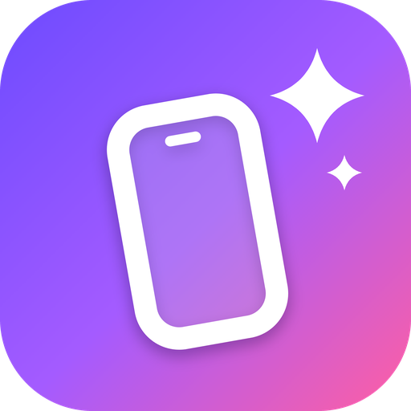

Templates to start from
Twenty-plus designs — gradients, editorial layouts and true 3D scenes — that you can mix slide by slide and restyle completely.

TinkScreen turns plain screenshots of your app into polished App Store and Google Play images. Pick a design, drop in your screenshots, write your headline, and export every size you need.
Twenty-plus designs — gradients, editorial layouts and true 3D scenes — that you can mix slide by slide and restyle completely.
iPhone, Galaxy and Pixel models in realistic, soft or cartoon styles that you can move, tilt and turn freely.
Fonts, weights, colors, spacing and alignment for every line, plus icons and award badges for ratings and milestones.
Join slides into a single strip and drag phones across the seams, so your screenshots read as one continuous story.
Everything saves as you go. Sign in with email or Google to keep your projects in your account and open them on any computer.
No ads, no analytics, no selling data. Without an account your work never leaves your browser. Read the privacy policy.